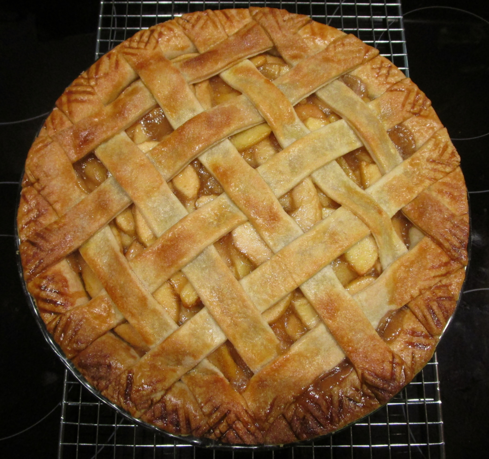

Hopepage
Apple Pie

My Favorite Apple Pie Recipe
This, my favorite Apple Pie recipe, uses all natural ingredients, simple to follow steps, and ends with you eating a delicious, home-made Apple Pie! Enjoy.
Ingredients
- 3/4 cup white sugar
- 2 tablesppons all-purpose flour
- 1/2 teaspoon ground cinnamon
- 1/4 teaspoon ground nutmeg
- 1/2 teaspoon lemon zest
- 7 cups thinly sliced apples
- 2 teaspoons lemon juice
- 1 tablesppon butter
- 1 recipe pastry for a 9 inch double crust pie
- 4 tablespoons milk (optional)
Steps
- Preheat oven to 425 degrees F (220 degrees C)
- Mix together the sugar, flour, cinnamon, nutmeg and lemon peel
- Line one crust in a 9-inch deep-dish pie pan. Layer 1/3 of apples into pie crust. Sprinkle with sugar mixture and repeat until done. Sprinkle with lemon juice and dot with butter.
- Place second pie crust on top of filling and flute the edges. Cut vents in top crust and brush with milk for a glazed appearance if desired.
- Bake at 425 degrees F (220 degrees C) for 40 to 50 minutes.